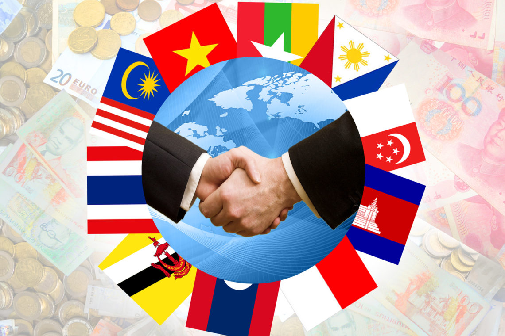

SDGs atau Sustainable Development Goals merupakan sebuah komitmen global dan nasional dalam rangka menciptakan kesejahteraan masyarakat serta mengatasi berbagai tantangan global yang kita hadapi agar kehidupan berkelanjutan lebih baik. SDGs ditetapkan oleh Perserikatan Bangsa-bangsa untuk mencapai kehidupan yang lebih baik dan berkelanjutan bagi semua orang. Bukan hanya itu saja tetapi juga dengan sasaran global tahun 2030 yang dicanangkan baik pada September 2015. SDGs mengajak semua negara, baik maju maupun berkembang untuk bekerja sama dalam upaya mencapai 17 tujuan supaya dapat mencapai kesejahteraan umat manusia hingga tahun 2030. SDGs telah mencakup 17 Goals/Tujuan salah satunya adalah no.14 Ekosistem Lautan.


Tujuan dibuatnya ekosistem lautan yaitu melestarikan lautan, samudera, dan sumber daya laut untuk mendukung pembangunan berkelanjutan. SDG 14 mengacu untuk melestarikan dan memanfaatkan secara berkelanjutan sumber daya kelautan dan samudera demi pembangunan berkelanjutan. Fokus utama dari tujuan ini adalah menjaga ekosistem laut, mengatasi masalah seperti polusi, penangkapan ikan yang berlebihan, dan kehilangan keanekaragaman hayati laut. SDG 14 juga menekankan pentingnya peningkatan pengetahuan ilmiah dan promosi teknologi ramah lingkungan dalam pengelolaan sumber daya kelautan. PBB telah menetapkan 10 target dan 10 indikator untuk SDG 14 ini mencakup pencegahan dan pengurangan polusi laut dan pengasaman laut, perlindungan ekosistem laut dan pesisir, serta pengaturan penangkapan ikan.Target tersebut juga menyerukan peningkatan pengetahuan ilmiah tentang lautan. Termasuk dalam hal tersebut adalah pencemaran laut, pengelolaan berkelanjutan dan perlindungan ekosistem laut dan pesisir, peraturan praktik penangkapan ikan dan manfaat ekonomi dari penggunaan sumber daya laut secara berkelanjutan. Indikator implementasinya berfokus pada peningkatan pengetahuan, penelitian dan teknologi untuk meningkatkan kesehatan laut dan keanekaragaman hayati laut, pada hak akses bagi nelayan skala kecil terhadap sumber daya dan pasar kelautan dan pada peningkatan kualitas sumber daya laut. konservasi dan pemanfaatan lautan secara berkelanjutan. Jumlah negara yang mencapai kemajuan dalam meratifikasi, menerima dan mengimplementasikan instrumen terkait kelautan melalui kerangka hukum, kebijakan dan kelembagaan yang menerapkan hukum internasional, sebagaimana tercermin dalam Konvensi Hukum Laut Perserikatan Bangsa-Bangsa, untuk konservasi dan penggunaan berkelanjutan lautan dan sumber dayanya.
Tidak terlepas dari upaya dalam pengurangan pencemaran laut, mengadopsi dan menjalankan secara efektif kerangka hukum untuk pemangkasan buangan laut dan polusi dari daratan tasi menjadi salah satu cara yang dapat dilakukan. Ekosistem laut hidup apabila perluasan daerah laut yang penting dapat dilakukan sekaligus keanekaragaman jenis kehidupan dapat terjaga untuk aktivitas pelestarian. Lagu, serta karya lain yaitu pertunjukan ilmiah yang dipandu oleh sains yang mendorong penelitian dan teknologi untuk mengedukasi masyarakat mengenai ekosistem laut itu sendiri. Di antara serangkaian Global Issues yang mengubah iklim adalah pemanasan laut, peningkatan keasaman, dan pergeseran pola arus yang semuanya berpengaruh terhadap kehidupan laut. Mengatasi perubahan iklim berkisar dengan kelestarian ekosistem laut. Keanekaragaman Hayati, yang mungkin terancam oleh hilangnya keanekaragaman hayati di lautan akibat penangkapan ikan berlebihan, polusi, dan perubahan habitat, harus dilestarikan. Kegiatan-kegiatan untuk melindungi spesies laut yang terancam adalah bagian dari SDG 14. Keamanan pangan sangat penting karena banyak komunitas bersumber pada sumber daya laut untuk pangan. Dengan demikian, pengelolaan yang berkelanjutan terhadap sumber daya kelautan ini sangat krusial bagi ketahanan pangan global. Ekonomi Berkelanjutan sektor kelautan menyuplai pekerjaan serta pendapatan bagi jutaan orang di seluruh dunia. Praktik perikanan berkelanjutan dinilai sejalan dengan penciptaan tujuan ekonomi yang inklusif dan berkelanjutan.
Kerja Sama
 Kerjasama Bilateral adalah Kerjasama Bilateral merupakan bentuk kerjasama yang dilakukan antara dua negara dengan tujuan saling menguntungkan kedua belah pihak. Kerjasama ini sering dilakukan melalui perjanjian yang disepakati oleh kedua pihak. Kerjasama Bilateral sangat penting karena memperkuat hubungan diplomatik, mengembangkan ekonomi, dan menanggulangi isu-isu global seperti perubahan iklim atau ancaman keamanan internasional. Kerja sama regional adalah bentuk kolaborasi antara negara-negara yang berada dalam satu kawasan geografis. Tujuan utamanya adalah mencapai kepentingan bersama di berbagai bidang, seperti ekonomi, politik, keamanan, sosial, dan budaya. Karena berada di kawasan yang berdekatan, negara-negara ini biasanya memiliki hubungan historis yang erat, sehingga kerja sama ini lebih mudah terjalin. Sementara itu, kerja sama multilateral melibatkan banyak negara dari berbagai belahan dunia. Biasanya, kerja sama ini dimediasi oleh organisasi internasional atau kesepakatan global untuk menghadapi isu-isu besar, seperti perdamaian, perdagangan, perubahan iklim, hingga pembangunan berkelanjutan.
Perbedaan dan Contohnya
Contoh yang paling umum adalah hubungan antara Indonesia dan Jepang. Kedua negara ini bekerja sama di bidang ekonomi, seperti investasi Jepang dalam pembangunan infrastruktur, misalnya proyek MRT Jakarta. Ada juga kerja sama Indonesia dengan Tiongkok dalam proyek besar, seperti pembangunan Kereta Cepat Jakarta-Bandung.
Kerja sama ini terjadi di tingkat kawasan, seperti ASEAN. Salah satu contohnya adalah ASEAN Free Trade Area (AFTA), yaitu kesepakatan untuk mengurangi atau menghapus tarif perdagangan antar negara anggota demi meningkatkan daya saing ekonomi regional. Contoh lainnya adalah ASEAN Health Ministers Meeting (AHMM), di mana negara-negara ASEAN berkoordinasi untuk menangani masalah kesehatan, seperti wabah COVID-19.
Kerja sama ini mencakup banyak negara di seluruh dunia, seperti yang dilakukan melalui organisasi internasional. Contohnya adalah World Trade Organization (WTO), yang bertugas mengatur perdagangan internasional dan menyelesaikan sengketa dagang. Ada juga Bank Dunia dan IMF, yang memberikan bantuan keuangan serta dukungan teknis untuk negara-negara berkembang agar bisa mengurangi kemiskinan dan mendorong pembangunan ekonomi.
Perbedaan Kerja sama bilateral melibatkan dua negara yang bekerja sama untuk mencapai kepentingan bersama, biasanya dalam bidang spesifik seperti perdagangan, investasi, atau infrastruktur. Contohnya, hubungan Indonesia dan Jepang dalam pembangunan MRT Jakarta, atau proyek Kereta Cepat Jakarta-Bandung yang melibatkan Indonesia dan Tiongkok. Hubungan ini cenderung lebih fokus dan langsung antara kedua pihak. Sementara itu, kerja sama regional melibatkan beberapa negara dalam satu kawasan geografis, seperti ASEAN, dengan tujuan memajukan kepentingan bersama di tingkat regional. Misalnya, ASEAN Free Trade Area (AFTA) yang mendorong perdagangan bebas di Asia Tenggara atau koordinasi kesehatan melalui ASEAN Health Ministers Meeting (AHMM). Berbeda dengan keduanya, kerja sama multilateral melibatkan banyak negara dari berbagai wilayah dunia untuk menangani isu-isu global yang kompleks, seperti perdagangan internasional dan perubahan iklim. Contohnya adalah World Trade Organization (WTO) dan Bank Dunia, yang berperan dalam mendukung pembangunan dan stabilitas ekonomi global. Kemudian, Perbedaan utama antara kerjasama multilateral dan jenis kerjasama lainnya (bilateral dan regional) terletak pada jumlah negara yang terlibat, tujuan yang diupayakan, serta cakupan kerjasama itu sendiri. Karena melibatkan negara-negara dengan berbagai latar belakang dan kepentingan yang berbeda, kerjasama multilateral cenderung lebih kompleks, membutuhkan konsensus lebih banyak, dan memerlukan proses diplomatik yang lebih rumit untuk mencapai kesepakatan. Meskipun demikian, kerjasama multilateral ini sangat penting untuk menangani masalah global yang tidak bisa diselesaikan oleh satu atau beberapa negara saja, seperti krisis iklim atau pandemi.
Hubungan SDGs dan Kerjasama
Hubungan antara SDGs dan kerjasama sangat erat dan saling mempengaruhi satu sama yang lain. Kerjasama, baik di tingkat lokal, nasional, maupun internasional, memiliki peran utama dalam mencapai tujuan-tujuan SDGs. Setiap SDG membutuhkan koordinasi antar berbagai pihak, seperti pemerintah, sektor swasta, masyarakat sipil, dan organisasi internasional. Sebagai contoh, SDG 14, yaitu "Life Below Water", yang bertujuan untuk melindungi dan melestarikan ekosistem laut serta memastikan keberlanjutan sumber daya laut untuk mendukung kehidupan manusia. SDG 14 menekankan pentingnya upaya kolaboratif antara berbagai pihak seperti pemerintah, organisasi internasional, sektor swasta, dan masyarakat sipil untuk menangani tantangan yang mempengaruhi lautan, seperti polusi laut, penangkapan ikan yang berlebihan, dan perubahan iklim. Kerja sama menjadi kunci untuk mengatasi isu-isu yang bersifat lintas batas, mengingat lautan adalah sumber daya global yang saling terhubung. Mekanisme kerjasama yang mendukung pencapaian SDGs dapat diwujudkan melalui kemitraan multistakeholder, yang mempertemukan berbagai pihak untuk saling melengkapi dalam hal sumber daya, keahlian, dan inovasi. Contohnya adalah Public-Private Partnerships yang membantu mewujudkan pembangunan infrastruktur berkelanjutan. Selain itu, pendanaan dan transfer teknologi, seperti bantuan pembangunan resmi, memainkan peran penting, terutama dalam mendukung negara berkembang menangani tantangan seperti perubahan iklim. Koordinasi kebijakan global melalui organisasi internasional seperti PBB juga memastikan bahwa implementasi SDGs berlangsung secara efektif dan terintegrasi, seperti yang tercermin dalam kesepakatan Paris Agreement. Contoh nyata kolaborasi ini dapat dilihat dalam inisiatif seperti World Food Programme (WFP), yang membantu menangani kelaparan global melalui distribusi makanan dan penguatan kapasitas lokal. Contoh lainnya adalah International Solar Alliance, yang mendukung transisi ke energi terbarukan dengan menggalang kerjasama lintas negara dalam bidang teknologi dan pendanaan. Dengan adanya sinergi antara SDGs dan kerjasama, tujuan pembangunan berkelanjutan dapat dicapai lebih efektif dan inklusif.
Kesimpulan dan Saran
Secara keseluruhan, SDGs atau disebut juga dengan Sustainable Development Goals adalah sebuah komitmen global yang ditetapkan oleh Perserikatan Bangsa-Bangsa untuk menciptakan kehidupan yang lebih baik dan berkelanjutan bagi umat manusia di seluruh dunia. Dengan 17 tujuan utama yang mencakup berbagai aspek kehidupan, SDGs bertujuan untuk mengatasi tantangan besar yang kita hadapi. Seperti pengurangan kemiskinan, perubahan iklim, kesetaraan gender, serta pelestarian lingkungan, termasuk ekosistem laut yang semakin terancam. Salah satu aspek yang paling penting dalam pencapaian SDGs adalah kerja sama antara negara-negara di dunia, yang dapat dilakukan dalam berbagai bentuk, seperti kerja sama bilateral, regional, dan multilateral. Setiap bentuk kerja sama ini memiliki peran yang sangat penting, karena memungkinkan negara-negara untuk berbagi sumber daya, teknologi, serta pengetahuan yang dapat membantu mengatasi berbagai tantangan global yang semakin kompleks. Kerja sama bilateral, misalnya, memungkinkan dua negara untuk fokus pada masalah tertentu, seperti pembangunan infrastruktur atau pengelolaan sumber daya alam secara berkelanjutan. Sementara itu, kerja sama regional dan multilateral melibatkan banyak negara yang bekerja bersama untuk mencapai tujuan bersama, seperti pengurangan polusi global atau penanganan perubahan iklim yang tidak bisa diatasi oleh satu negara saja. Kemudian, kerjasama multilateral mencakup banyak negara di seluruh dunia, seperti yang dilakukan melalui organisasi internasional. Saran yang dapat diberikan adalah, setiap negara harus lebih aktif dalam memperkuat kerja sama internasional agar pencapaian SDGs bisa terwujud. Negara-negara maju memiliki peran penting dalam membantu negara berkembang, terutama dalam hal transfer teknologi dan pendanaan. Dukungan ini akan sangat membantu negara-negara yang masih berjuang mengatasi tantangan besar seperti perubahan iklim dan kerusakan ekosistem laut. Selain itu, kerja sama juga harus melibatkan berbagai pihak, tidak hanya pemerintah, tetapi juga sektor swasta, lembaga pendidikan, dan masyarakat sipil. Kolaborasi yang lebih luas ini akan memastikan bahwa tujuan pembangunan berkelanjutan tercapai secara lebih inklusif dan merata, tanpa meninggalkan siapapun di belakang. Kita juga perlu terus mendorong inovasi dan kebijakan yang dapat mendukung keberlanjutan jangka panjang, seperti praktik ramah lingkungan dalam industri dan pemberdayaan masyarakat lokal. Dengan adanya kerja sama yang kuat dan berkesinambungan, tantangan global yang besar ini bisa dihadapi dengan lebih baik. Hanya dengan bersama-sama, kita bisa menciptakan dunia yang lebih adil, sejahtera, dan berkelanjutan bagi generasi sekarang dan yang akan datang.